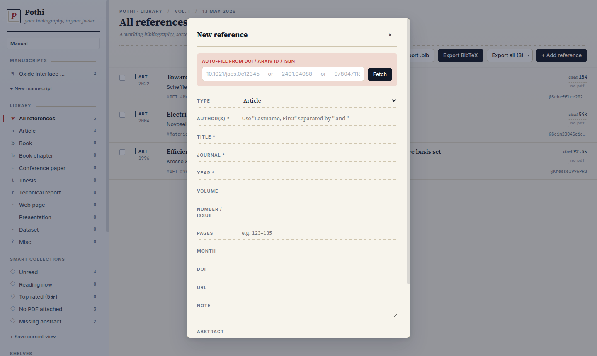
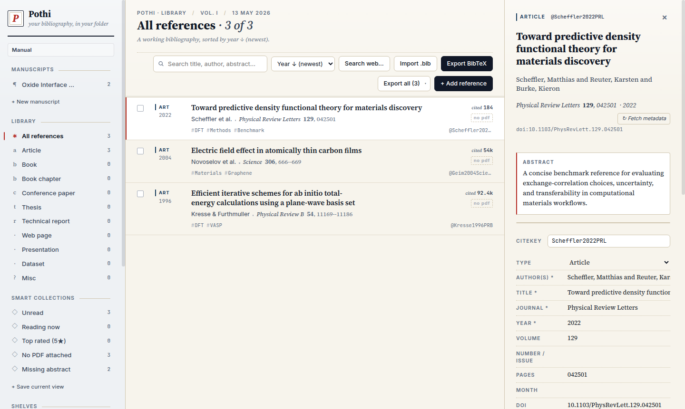
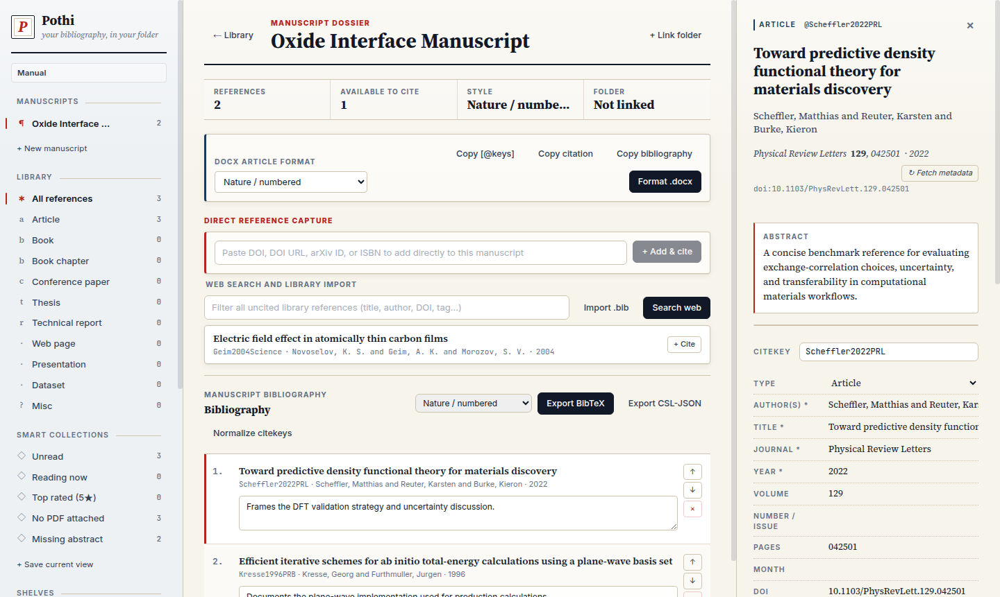
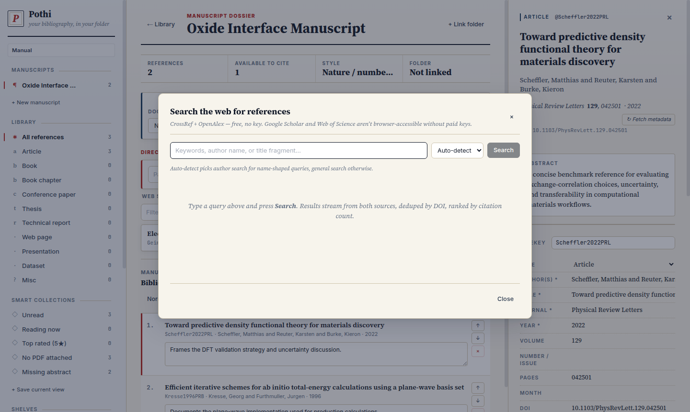

A complete workflow manual for research bibliographies
Install Pothi, build a searchable library, search the web, curate manuscript-specific bibliographies, export BibTeX and CSL-JSON, and recover cleanly from stale browser or server state.
Install
Linux and macOS
Run the installer once from the project folder.
./install.sh
source ~/.zshrc
pothiWindows
Run the installer, then use the Desktop or Start Menu launcher.
install.batBundled executable
Build a self-contained launcher, then rerun the installer once.
python3 build_standalone.py
./install.sh| Command | Purpose |
|---|---|
pothi | Start the local server and open the app. |
pothi status | Show whether Pothi is running on the configured port. |
pothi open | Open a browser tab for an already-running server. |
pothi stop | Stop the local Pothi server. |
What Pothi manages
The library is the full local database of references. Manuscripts are curated bibliographies drawn from that library. A manuscript can have its own ordered reference list, rationale notes, export files, and linked folder without duplicating the global reference record.
- Library: DOI lookup, PDF import, BibTeX import, web search, tags, notes, ratings, and file attachments.
- Manuscript: cited references, order, rationale, BibTeX export, CSL-JSON export, and optional folder auto-write.
- Linked folder: writes portable files such as
references.bib,refs.json, and_pothi-library.json.
Library workflow
Use + Add reference for DOI, DOI URL, arXiv ID, ISBN, or manual metadata. Use Import .bib for existing BibTeX collections and Search web for CrossRef and OpenAlex discovery.


Manuscript workflow
Create a manuscript from the sidebar. Inside the manuscript workspace you can add and cite a DOI directly, import a BibTeX file into that manuscript, search the web, search uncited library entries, reorder citations, write rationale notes, and export the manuscript bibliography.

| Task | Action |
|---|---|
| Add by DOI | Paste DOI, DOI URL, arXiv ID, or ISBN into the direct capture field and click + Add & cite. |
| Cite existing entry | Search uncited library references inside the manuscript and click + Cite. |
| Import manuscript BibTeX | Click Import .bib. New entries are imported and cited; existing entries are deduplicated. |
| Inspect a reference | Click a cited or uncited row. The normal detail panel opens without leaving manuscript mode. |
| Export | Use Export BibTeX or Export CSL-JSON from the manuscript header. |
DOCX article format workflow
For Word and LibreOffice Writer manuscripts, use the manuscript DOCX article format panel to choose APA / author-year, IEEE / numeric, Nature / numbered, Vancouver / biomedical, or ACS / chemistry output.
| Action | Use |
|---|---|
| Copy [@keys] | Copies placeholders such as [@Scheffler2022PRL; @Kresse1996PRB] for insertion into a DOCX draft. |
| Copy citation | Copies a formatted in-text citation in the selected article style. |
| Copy bibliography | Copies the manuscript bibliography in the selected style, ready to paste into Word. |
| Format .docx | Processes a DOCX containing [@citekey] placeholders and downloads a formatted -cited.docx copy. |
[@Scheffler2022PRL]
[@Scheffler2022PRL; @Kresse1996PRB]Web search
Web search uses CrossRef and OpenAlex without an API key. Auto-detect chooses author search for name-shaped queries and broad search for topic-shaped queries.

graphene field effect transistor
kanchan sarkar
Scheffler density functional theory
10.1103/PhysRevLett.129.042501Citekeys
Pothi generates compact citekeys in the form SurnameYearVenueAbbrev.
Scheffler2022PRL
Kresse1996PRB
Geim2004Science
Doe2020JACSUse Normalize citekeys to rewrite older long keys into this compact form.
Export and backup
Library export can produce BibTeX, RIS, CSL-JSON, and full-library backups. Manuscript export produces the
cited bibliography only. Folder-linked manuscripts automatically write references.bib and
refs.json.
my-paper/
draft.tex
references.bib
refs.json
figures/
notes/Use the exported files with LaTeX, Pandoc, Zotero, or other citation processors.
Troubleshooting
| Problem | Fix |
|---|---|
| Wrong port | Use http://127.0.0.1:8765/. Current launchers clean stale Pothi servers on the old 8766 port. |
| Stale app | Run pothi stop, then pothi, then hard-refresh the browser. |
| Manual missing | Open http://127.0.0.1:8765/manual.html. |
| DOI lookup fails | Check the DOI starts with 10., remove tracking text, or create a manual entry. |
| Dragging fails | Use the button path: open manuscript, search uncited references, then click + Cite. |
| Folder write fails | Use Chrome, Edge, Brave, Chromium, or Opera and click Resume if permission expired. |
Shortcuts
| Shortcut | Action |
|---|---|
/ | Focus library search. |
Esc | Clear search, close detail, or back out. |
Arrow Up | Move selection up. |
Arrow Down | Move selection down. |
Enter | Open selected reference. |